Setup Unity Project
Info
It is advised to checkout the Quick Start Demo tutorial before reading this section.
This page is a tutorial for setting up a AWSIM Unity project.
Environment preparation
System setup
- Make sure your machine meets the required hardware specifications.
- NOTE: PC requirements may vary depending on simulation contents which may change as the simulator develops
- Prepare a desktop PC with Ubuntu 22.04 installed.
- Install Nvidia drivers and Vulkan Graphics API.
- Install git.
- Make sure your machine meets the required hardware specifications.
- NOTE: PC requirements may vary depending on simulation contents which may change as the simulator develops
- Prepare a desktop PC with Windows 10 or 11 (64 bit) installed.
- Install git.
Unity installation
Info
AWSIM's Unity version is currently 2021.1.7f1
Follow the steps below to install Unity on your machine:
- Install UnityHub to manage Unity projects. Please go to Unity download page and download latest
UnityHub.AppImage. 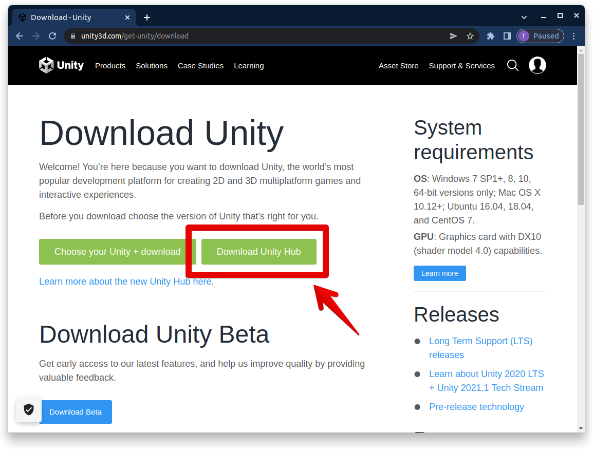 -
Install Unity 2021.1.7f1 via UnityHub.
- Open new terminal, navigate to directory where
UnityHub.AppImageis download and execute the following command:./UnityHub.AppImage - To install Unity Editor please proceed as shown on the images below
 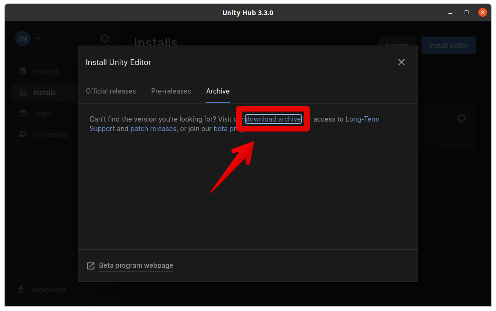
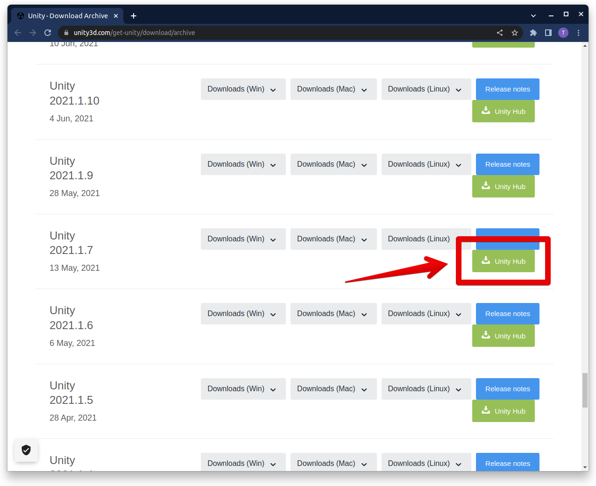
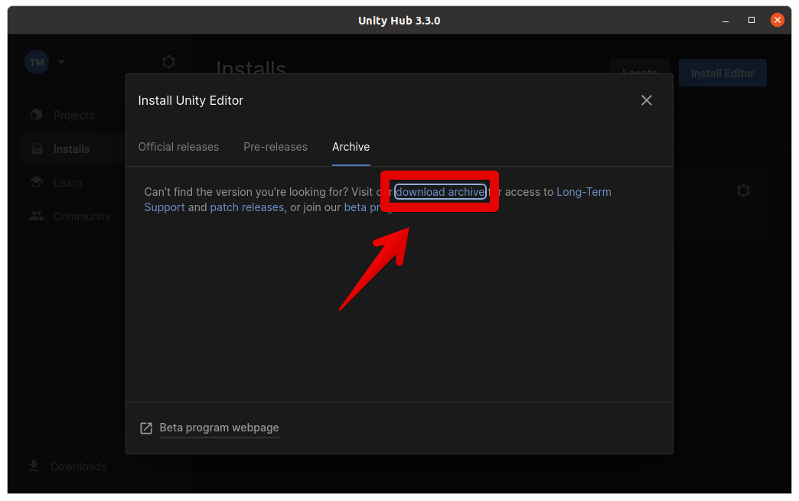
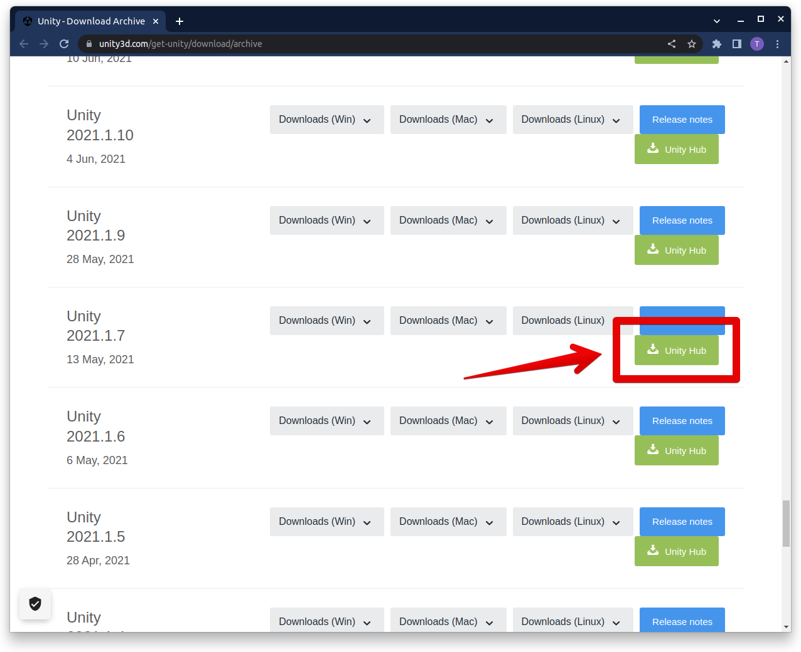 -
At this point, your Unity installation process should have started.
- *NOTE: If the installation process has not started after clicking the green button (image above), please copy the hyperlink (by rightclicking the button and selecting
Copy link address) and add it as a argument for Unity Hub app. An example command:./UnityHub.AppImage unityhub://2021.1.7f1/d91830b65d9b
- *NOTE: If the installation process has not started after clicking the green button (image above), please copy the hyperlink (by rightclicking the button and selecting
-
After successful installation the version will be available under the
Installstab in Unity Hub. 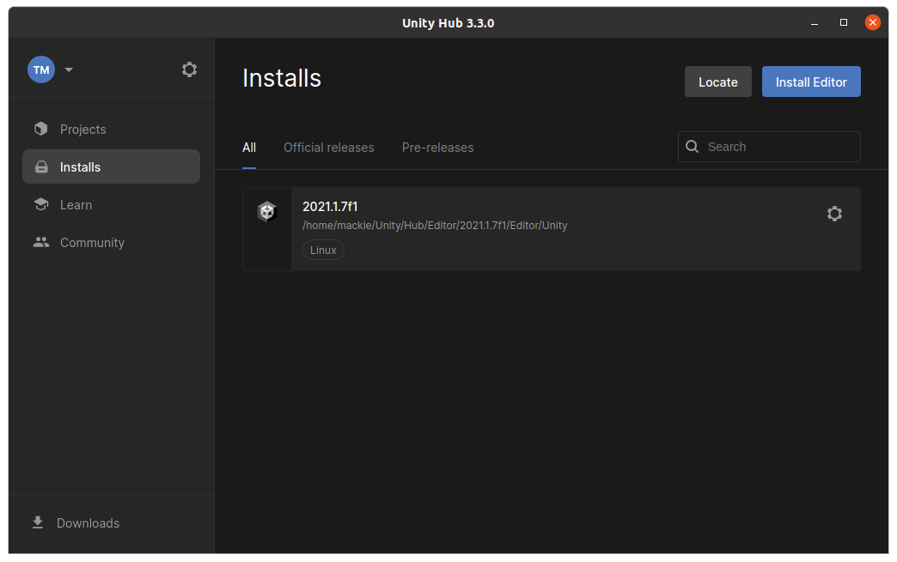
- Open new terminal, navigate to directory where
Open AWSIM project
To open the Unity AWSIM project in Unity Editor: 1. Make sure you have the AWSIM repository cloned
git clone git@github.com:tier4/AWSIM.git
-
Launch UnityHub.
./UnityHub.AppImage -
Open the project in UnityHub
-
Click the
Openbutton
-
Navigate the directory where the AWSIM repository was cloned to

-
The project should be added to
Projectstab in Unity Hub. To launch the project in Unity Editor simply click theAWSIMitem 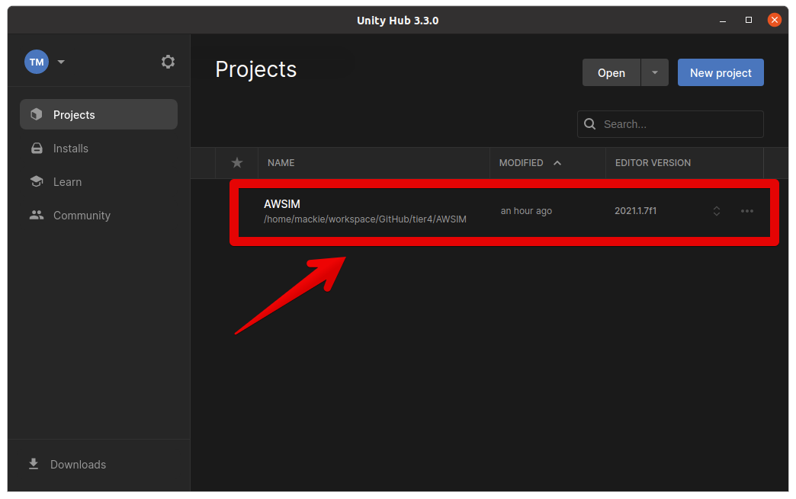 -
The project is now ready to use 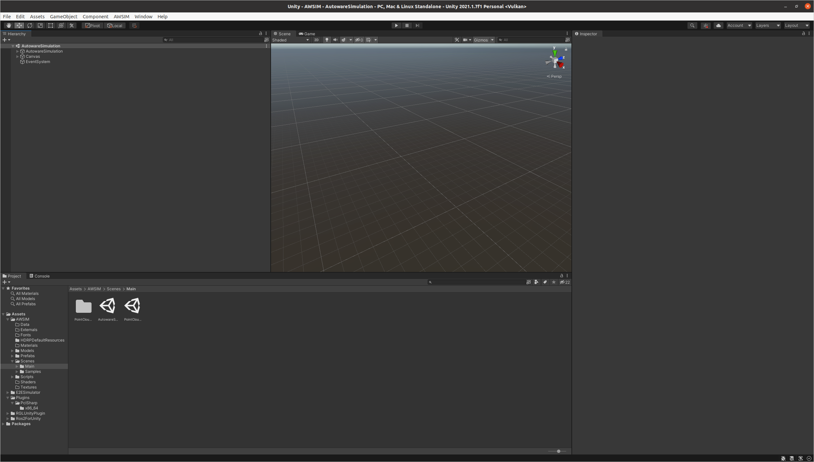
-
Warning
If you get the safe mode dialog when starting UnityEditor, you may need to install openssl.
- download libssl
$ wget http://security.ubuntu.com/ubuntu/pool/main/o/openssl1.0/libssl1.0.0_1.0.2n-1ubuntu5.13_amd64.deb - install
sudo dpkg -i libssl1.0.0_1.0.2n-1ubuntu5.11_amd64.deb
Import external packages
To properly run and use AWSIM project in Unity it is required to download map package which is not included in the repository.
-
Download and import
Japan_Tokyo_Nishishinjuku.unitypackage -
In Unity Editor, from the menu bar at the top, select
Assets -> Import Package -> Custom Package...and navigate theJapan_Tokyo_Nishishinjuku.unitypackagefile. 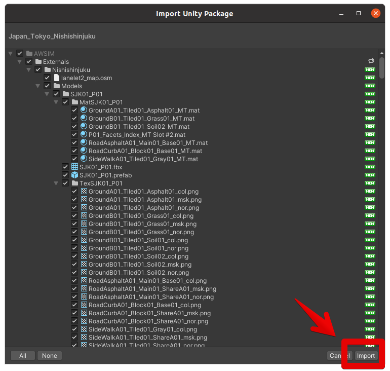
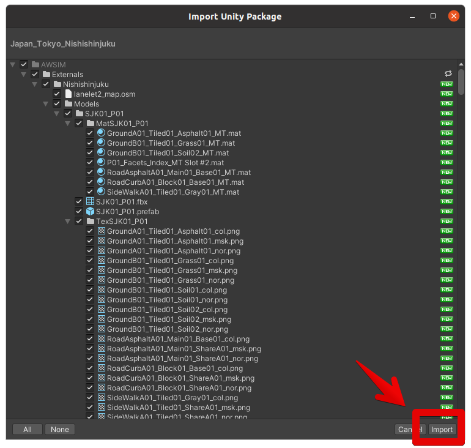 Nishishinjukupackage has been successfully imported underAssets/AWSIM/Externals/directory. 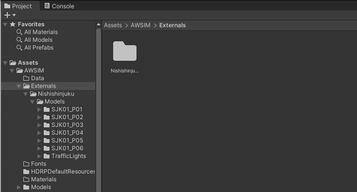
Info
The Externals directory is added to the .gitignore because the map has a large file size and should not be directly uploaded to the repository.
Run the demo in Editor
The following steps describe how to run the demo in Unity Editor:
- Open the
AutowareSimulation.unityscene placed underAssets/AWSIM/Scenes/Maindirectory - Run the simulation by clicking
Playbutton placed at the top section of Editor.